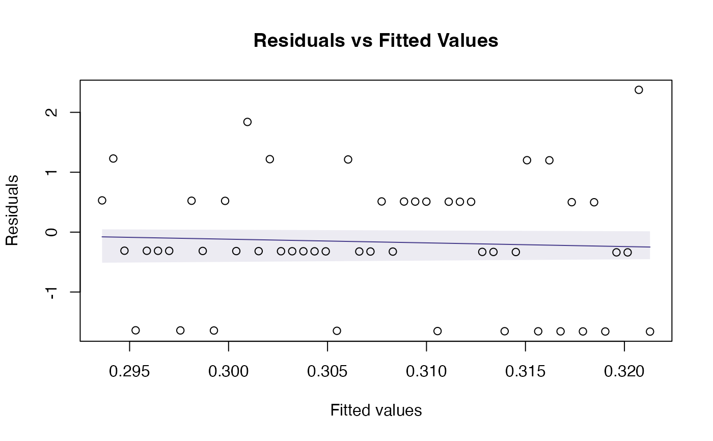
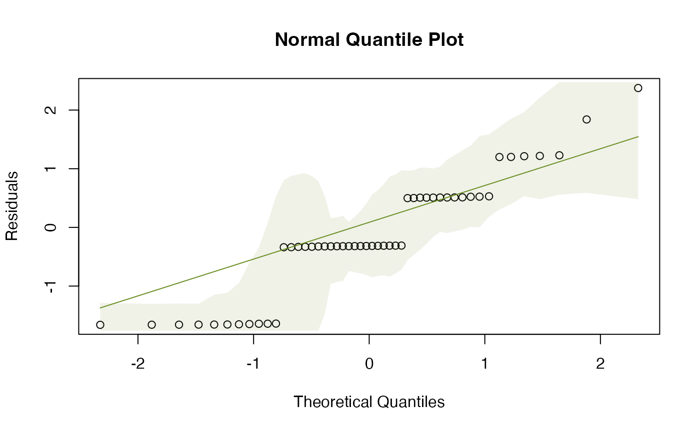
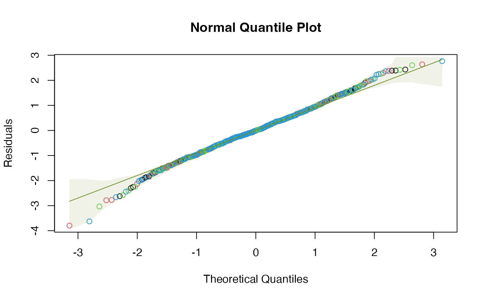
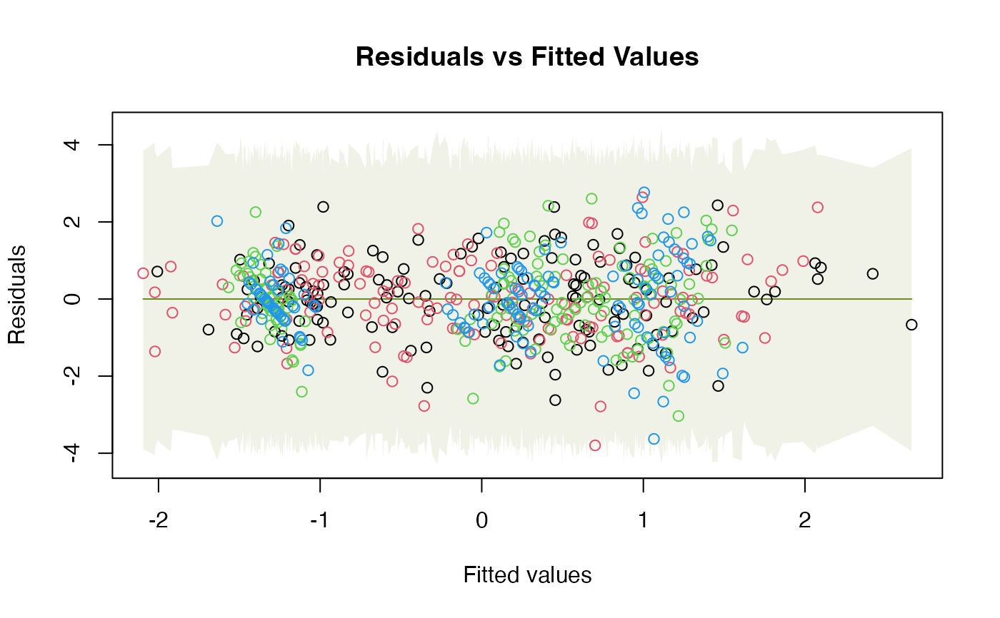
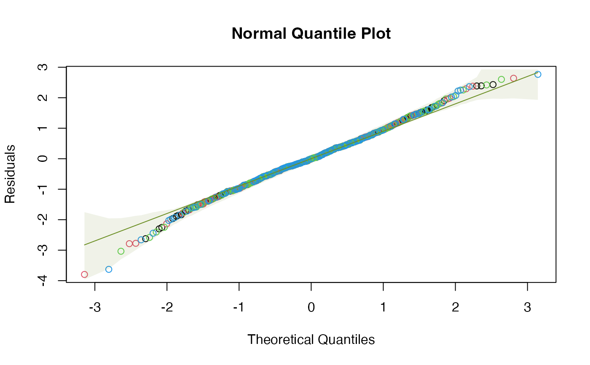

Diagnostic Plots for a Fitted Object with Simulation Envelopes
plotenvelope.RdProduces diagnostic plots of a fitted model y, and
adds global envelopes constructed by simulating new residuals, to see how
departures from expected trends compare to what might be expected if the
fitted model were correct. Global envelopes are constructed using the
GET package (Myllymäki et al 2017) for simultaneous control of error rates over the
whole plot, by simulating new responses from the fitted model then recomputing residuals
(which can be computationally intensive), or alternatively, by simulating residuals directly from the (multivariate) normal distribution
(faster, but not always a smart move). Options for diagnostic plots to construct are a residual vs fits,
a normal quantile plot, or scale-location plot, along the lines of plot.lm.
Usage
plotenvelope(
y,
which = 1:2,
sim.method = "refit",
n.sim = 199,
conf.level = 0.95,
type = "st",
transform = NULL,
main = c("Residuals vs Fitted Values", "Normal Quantile Plot", "Scale-Location Plot"),
xlab = c("Fitted values", "Theoretical Quantiles", "Fitted Values"),
ylab = c("Residuals", "Residuals", expression(sqrt("|Residuals|"))),
col = par("col"),
line.col = if (add.smooth) c("slateblue4", "olivedrab", "slateblue4") else
rep("olivedrab", 3),
envelope.col = adjustcolor(line.col, 0.1),
add.smooth = TRUE,
plot.it = TRUE,
fitMin = if (inherits(y, "glm") | inherits(y, "manyglm")) -6 else -Inf,
...
)Arguments
- y
is any object that responds to
residuals,predictand (ifsim.method="refit")simulateandupdate.- which
a vector specifying the diagnostic plots to construct:
residual vs fits, with a smoother
normal quantile plot
scale-location plot, with smoother
These are the first three options in
plot.lmand a little is borrowed from that code. A global envelope is included with each plot around where we expect to see the data (or the smoother, if requested, for plots 1 and 3) when model assumptions are satisfied. If not fully captured by the global envelope, there is some evidence that the model assumptions are not satisfied.- sim.method
How should residuals be simulated? The default for most objects is
"refit", which constructs new responses (viasimulate), refits the model (viaupdate), then recomputes residuals, often known as a parametric bootstrap. This is computationally intensive but gives a robust answer. This is the only suitable option if residuals are not expected to be normal when assumptions are satisfied (like when usingglmwith a non-Gaussian family). Alternatively,"norm"simulates from a normal distribution, matches means and variances (and covariances for multivariate responses) to the observed residuals. The"stand.norm"option sets means to zero and variances to one, which is appropriate when residuals should be standard normal when assumptions are satisfied (as for any object fitted using themvabundpackage, for example). These options are faster but more approximate than"refit", in fact"stand.norm"is used as the default formanyglmobjects, for computational reasons.- n.sim
the number of simulated sets of residuals to be generated, to which the observed residuals will be compared. The default is 199 datasets.
- conf.level
the confidence level to use in constructing the envelope.
- type
the type of global envelope to construct, see
global_envelope_testfor details. Default"st"uses studentized envelope tests to protect for unequal variance, which has performed well in simulations in this context.- transform
a character vector pointing to a function that should be applied to both axes of the normal quantile plot. The most common use is to set
transform="pnorm"for a PP-plot.- main
the plot title (if a plot is produced). A vector of three titles, one for each plot. If only one value is given that will be used for all plots.
- xlab
xaxis label (if a plot is produced). A vector of three labels, one for each plot. If only one value is given that will be used for all plots.- ylab
yaxis label (if a plot is produced). A vector of three labels, one for each plot. If only one value is given that will be used for all plots.- col
color of points
- line.col
a vector of length three containing the colors of the lines on the three diagnostic plots. Defaults to "slateblue4" for smoothers and to "olivedrab" otherwise. Because it's cool.
- envelope.col
color of the global envelope around the expected trend. All data points should always stay within this envelope (and will for a proportion
conf.levelof datasets satisfying model assumptions). If a smoother has been used on the residual vs fits or scale-location plot, the envelope is constructed around the smoother, that is, the smoother should always stay within the envelope.- add.smooth
logical defaults to
TRUE, which adds a smoother to residual vs fits and scale-location plots, and computes a global envelope around the smoother rather than the data (add.smooth=FALSE). No smoother is added to the normal quantile plot.- plot.it
logical. Should the result be plotted? If not, a list of analysis outputs is returned, see Value.
- fitMin
the minimum fitted value to use in plots, any fitted value less than this will be truncated to
fitMin. This is useful for generalised linear models, where small fitted values correspond to predictions that are numerically zero. The default is to setfitMinto-6for GLMs, otherwise no truncation (-Inf).- ...
further arguments sent through to
plot
Value
Up to three diagnostic plots with simulation envelopes are returned, and additionally a list of three objects used in plotting, for plots 1-3 respectively. Each is a list with five components:
xX-values used for the envelope. In plots 1 and 3 this is the fitted values, or if
add.smooth=TRUE, this is 500 equally spaced points covering the range of fitted values. For plot 2, this is sorted normal quantiles corresponding to observed data.yThe Y-values used for the envelope. In plots 1 and 3 this is the residuals, or with
add.smooth=TRUE, this is the values of the smoother corresponding tox. For plot 2, this is the sorted residuals.loThe lower bound on the global envelope, for each value of
x.hiThe upper bound on the global envelope, for each value of
x.p.valueA P-value for the test that observed smoother or data are consistent with what would be expected if the fitted model were correct, computed in
global_envelope_test.
Details
A challenge when interpreting diagnostic plots is understanding the extent to which
deviations from the expected pattern could be due to random noise (sampling variation)
rather than actual assumption violations. This function is intended to assess this,
by simulating multiple realizations of residuals (and fitted values) in situations where
assumptions are satisfied, and plotting a global simulation envelope around these at level conf.level.
This function can take any fitted model, and construct any of three diagnostic plots, as determined by which:
Residual vs fits plot (optionally, with a smoother)
Normal quantile plot
Scale-Location plot (optionally, with smoother)
and see if the trend is behaving as expected if the model were true. As long as
the fitted model responds to residuals and predict
(and when sim.method="refit", simulate and update) then a simulation envelope
will be constructed for each plot.
Simulation envelopes are global, constructed using the GET-package, meaning that
(for example) a 95% global envelope on a quantile plot should contain all residuals for 95% of datasets
that satisfy model assumptions. So if any data points lie outside the
quantile plot's envelope we have evidence that assumptions of the fitted model are not satisfied.
The GET-package was originally constructed to place envelopes around functions, motivated by
the problem of diagnostic testing of spatial processes (Myllymäki et al 2017), but it can equally
well be applied here, by treating the set of residuals (ordered according to the x-axis) as point-wise evaluations of a function.
For residual vs fits and scale-location plots, if do.smooth=TRUE, global envelopes are constructed for
the smoother, not for the data, hence we are looking to see if the smoother
is wholly contained within the envelope. The smoother is constructed using gam from the mgcv
package with maximum likelihood estimation (method="ML").
Note that the global envelopes only tell you if there is evidence of violation of model assumptions -- they do not tell you whether the violations are large enough to worry about. For example, in linear models, violations of normality are usually much less important than violations of linearity or equal variance. And in all cases, modest violations tend to only have modest effects on the validity of inferences, so you need to think about how big observed violations are rather than just thinking about whether or not anything is outside its simulation envelope.
The method used to simulate data for the global envelopes is controlled by sim.method.
The default method (sim.method="refit") uses a parametric bootstrap approach: simulate
new responses from the fitted model, refit the model and recompute residuals and fitted values.
This directly assesses whether trends in observed trends depart from what would be expected if the fitted model
were correct, without any further assumptions. For complex models or large datasets this would however be super-slow.
A fast, more approximate alternative (sim.method="norm") is to simulate new (multivariate) normal residuals
repeatedly and use these to assess whether trends in the observed data depart from what would be expected
for independent (multivariate) normal residuals. If residuals are expected to be standard
normal, a more refined check is to simulate from the standard normal using (sim.method="stand.norm").
This might for example be useful when diagnosing a model fitted using the mvabund package (Wang et al. 2012),
since this calculates Dunn-Smyth residuals (Dunn & Smyth 1996), which are approximately standard normal when assumptions are satisfied.
If y is a glm with non-Gaussian family then residuals will not be normal and "refit" is the
only appropriate option, hence other choices will be overridden with a warning reporting that this
has been done.
Note that for Multivariate Linear Models (mlm), cresiduals and cpredict
are used to construct residuals and fitted values (respectively) from the full conditional models
(that is, models constructed by regressing each response against all other responses
together with predictors). This is done because full conditionals are diagnostic of joint
distributions, so any violation of multivariate normality is expressed as a violation of
linear model assumptions on full conditionals. Results for all responses are overlaid on a single plot,
future versions of this function may have an overlay option to separately plot each response.
The simulated data and subsequent analysis are also used to obtain a P-value
for the test that model assumptions are correct, for each plot. This tests if sample residuals or their smoothers
are unusually far from the values expected of them if model assumptions were satisfied. For details see
global_envelope_test.
References
Dunn, P. K., & Smyth, G. K. (1996), Randomized quantile residuals. J. Comp. Graphical Stat. 5, 236-244. doi:10.1080/10618600.1996.10474708
Myllymäki, M., Mrkvička, T., Grabarnik, P., Seijo, H. and Hahn, U. (2017), Global envelope tests for spatial processes. J. R. Stat. Soc. B, 79: 381-404. doi:10.1111/rssb.12172
Wang, Y. I., Naumann, U., Wright, S. T., & Warton, D. I. (2012), mvabund - an R package for model-based analysis of multivariate abundance data. Methods in Ecology and Evolution, 3, 471-474. doi:10.1111/j.2041-210X.2012.00190.x
Warton DI (2022) Eco-Stats - Data Analysis in Ecology, from t-tests to multivariate abundances. Springer, ISBN 978-3-030-88442-0
Examples
# fit a Poisson regression to random data:
y = rpois(50,lambda=1)
x = 1:50
rpois_glm = glm(y~x,family=poisson())
plotenvelope(rpois_glm,n.sim=99)


# Fit a multivariate linear model to the iris dataset:
data(iris)
Y = with(iris, cbind(Sepal.Length,Sepal.Width,Petal.Length,Petal.Width))
iris_mlm=lm(Y~Species,data=iris)
# check normality assumption:
plotenvelope(iris_mlm,n.sim=99,which=2)

# A few more plots, with envelopes around data not smoothers:
plotenvelope(iris_mlm, which=1:3, add.smooth=FALSE)


 # Note violation on the scale/location plot.
# Note violation on the scale/location plot.